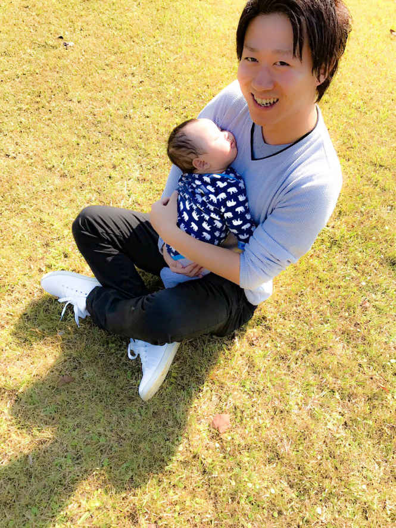

| 脱サラして毎日が１０倍ワクワクする人生の歩き方 〜本当に稼げる転売入門〜 | |
| 加藤純一 | |
| Hitotsuku Publication (2017) | |
加藤純一
はじめまして。加藤純一です。この度は、本書を手に取っていただき誠にありがとうございます。
私は現在、茨城県で生活をしながら、「転売ビジネス」「情報発信ビジネス」を行っている会社の代表をしています。
「転売」とは、簡単に言ってしまえば「物を売る」ということで、言葉自体は最近よく耳にしたりするのではないかと思います。しかし「情報発信」という言葉を聞いてピンッとくる人は、そんなにたくさんいないのかなと私は思います。「え？ 情報発信？？ それってどんなビジネスなんだ？？？」なんて思う人がおそらくほとんどでしょう。
簡単に言いますと情報発信ビジネスとは、苦しい思いをしたことやお金を稼いで人生を変えられたこと、といった自分自身の過去の経験を、いろいろな手段で世の中に発信していき、自分と同じような思いをして悩んでいる人の問題を解決していこう、というビジネスのことです。
人間は誰しも大きなことから小さなことまで様々な悩みを抱えながら生きているものだと思います。本書を手に取っていただいたあなたも今、
・このままの人生で本当にいいのだろうか......
・最近全然ワクワクしていないな......
・今お金をどうしても稼がなきゃいけない状況にある
・現在の自分の収入を増やしたい
・会社員だけど脱サラして、自由な時間を手に入れたい
・自立して快適な生活を送りたい
・旅行や趣味など、好きなことに時間を使いたい
・パートナーを幸せにしたい、親孝行したい
など、現状に関する悩みを抱えているのではないでしょうか？
ですので、そんな多くの悩みを解決していく手段として少しでもあなたのお役に立つことができれば、という思いを私は何よりいちばんに持ちながら、現在ビジネスを行っているのです。
私自身、２年ほど前まではごく普通のサラリーマンとして日々を過ごしていましたが、サラリーマンの生活には、たくさんの悩みがありました......。しかし私は、ネットビジネスと出会い、転売ビジネスでお金を稼いで、脱サラをすることができました。それだけではなく、個人事業主として１年ほど生活をしてからは、27
歳という年齢にして株式会社を設立するまでの人間になれたのです。今では、ストレスがたくさんあったサラリーマンの生活とは無縁の、妻と娘と息子と共に、とても楽しい充実した毎日を送っています。だからこそ、今悩んでいるあなたも私のようにぜひ生活を変えて欲しい！ と、心から思っています。
さて、そんな思いを発信していく手段として、この度私は本を出版させていただきました。出版に至るには、「こんな自分でもできるなら......」という気持ちもありましたが、「書籍で情報発信をする」ということは非常に影響力がある！ と考えもあってのことでした。
今の世の中「ネットビジネス」と聞くと、「怪しいし危ないでしょ」「詐欺なんじゃないか」「ねずみ講でしょそれ」などと言った、悪い評判や噂が流れるものです。そんなマイナスイメージが浸透しているなか、動画やＰＤＦといったもので情報を発信していても、人からはなかなか信用されないのが悲しい現実です......。もちろん世の中には本当に悪いビジネスも多く存在しているので、それは仕方がないものだとも思いますが......。
しかし書籍では、自分の名前や自分がやっている内容が広く公開されるので、安全性のハードルが他のツールに比べてはるかに上がります。そのため、そういった悪いものとの差別化が図れるのではないか、と私は考えているのです。
先ほどもお伝えしたように私には、あなたの悩みを解決していきたいという気持ちが大きくあります。それを実現するためには、まずあなたに私を、私の言葉を信じていただきたい！ と何より感じています。
信用や信頼がない言葉は、全くの無になって、何も変わらないという結果を生んでしまいます......。私は、あなたにそんなふうには絶対になってほしくないと思っています。そのため、思い切ってこの本を書かせていただきました！
本書では、転売ビジネスでお金を稼いだ私だから言える「なぜ転売がいいのか？」「稼げる人と稼げない人は何が違うのか？」「どのような転売の方法があるのか？」「安定した利益を出すには何が必要なのか？」について、惜しみなくあなたにお伝えしています。
本書を通して、少しでも転売ビジネスの世界を知っていただき、私の思いがあなたに届くことが叶いましたら、何より幸いです。
「はじめに」のところでも少しお話をしましたが、私は転売ビジネスと出会って、人生が大きく変わりました。しかし「転売」というビジネスは一体どういったものなのか？ ということを、本書を読んでいただいているあなたをはじめ、世の中の多くの人は知らないのではないかと思います。知らないものを突然勧められても誰もやってみようとは思わないものですよね。実際、私も最初はそうでした（笑)。
ですのでまず始めに、転売ビジネスと出会う前の私と、出会ってからの私といういわゆる「ビフォーとアフター」をあなたにお伝えさせてください。
私は幼少時代、両親と妹の４人家族の裕福な家庭で生活をしていました。海外旅行をしたり、誕生日に欲しいものを何でも買ってもらえたり、数年おきには新車の自家用車に乗れたり......そんな生活を送っていたのです。周りの友達で同じような生活をしている人がいなかったので、自分は恵まれているなと思いながらも当時はそんな生活が当たり前、という感覚になっていました。
何不自由なく学生時代を生きていた私でしたが、19
歳のときに私の人生を変える大きな出来事がありました。それは、父に多額の借金があるということを知ってしまったのです。突然、「30
万円貸してくれ！」と父から連絡が来て、よくよく調べてみると５００万円くらいの借金があることが発覚しました。普通のサラリーマンでこの額の借金とは尋常ではありませんでしたが、父の「自分の力で返せる」という言葉を信じて、その時は妹とお金を出し合ってお金を工面しました。
自分の生活は幻想だったのか、とお金の怖さを感じながらも私は、サラリーマンとして仕事を続けて、21
歳の若さで結婚をすることになりました。「このまま人生順風満帆に......」なんて思っていた22
歳とき、再び父から突然の連絡が来ることとなりました。そして今度は、「仕事を辞めたから、生活するためのお金を貸してほしい」と告げられたのでした。ここでもまた調べてみると、実は３年前の借金を返すことができていなかったということが発覚しました。そして父は、自分の退職金でそれを返そうとしたそうですが、それでも全然足りなかった、というのが事の真相だったのです......。
生活に困窮した父を助けるために、私は自分の収入から毎月約10
万円ものお金を父親に送るという生活になってしまいました。自分の家庭も持ちながらでの10
万円だったので、サラリーマンのお給料だけではかなり厳しいということは、きっと誰にだって想像できることだろうと思います。結局、父の生活を支え続けることは不可能で、役所に申請をして父は生活保護を受けるという末路を歩むことになりました......。このとき私は、自分の人生を振り返って、生活を見つめ直してみて、「このままサラリーマンとして歳を重ねて、働き生きていく人生は厳しいのではないか？」ということを考え始めるようになりました。
もともと私は、人と話すことが好きだったので営業職をやっており、業務成績も良く、２年後には昇進して管理職を任せてもらえるようにもなれていました。「管理職ってお給料とかボーナスとか結構良いんじゃないの？」みたいな世間的によくあるイメージを信じていて、父の借金のことを知るまではそんな生活に満足をしていた自分がいたのも事実としてありました。
しかしふたを開けてみれば、業務量が増えた、現場のときよりも安いお給料だった、毎日神奈川県までの高速道路通勤をしなければならない、という本当に辛い現実しか待っていませんでした......。父の借金とキツイ労働環境もあって私は、何か自分でお金を稼げる力を身に付けて、脱サラをして会社に頼らずに生きていく、そのような道を探すことも視野に入れていかなければならないのではないか、と思うようになりました。自分のなかですごく葛藤しながらその日から毎日を過ごすようになっていったのでした。
混沌とした気持ちを抱えながらも、何かビジネスをやるしかない！ と考えていた私は、この後ネットビジネスと出会うことになりました。
当時の私はまずスタートとして、世の中で〝食いっぱぐれない〟スキルとは何だろう？ ということを考えて情報を探してみることにしました。そしてたくさん情報を集めていくなかで、
・スピーキングスキル
・コピーライティングスキル
・マーケティングスキル
という３つのスキルが非常に重要ということを知ったのでした。
スピーキングは営業でやった経験があったので、「自分がやったことのないことをやりたい！」と当時思っていた私は、コピーライティングからやってみようと考えました。そして取りかかりやすかった「ブログビジネス」というものを２０１５年の12
月からやることにしたのでした。
ちなみにこのとき同時に、私は来年の７月くらいには会社を辞めようという目標も立てていました。先に何か目標があったほうが良いですし、そのときは正直、「夏のボーナスはいらないんで辞めます！」と言ってやろうくらいの気持ちで当時はいたからです。
当時私は、「人から教わる」ということの大切さは分かっていたつもりでしたが、どうしてもお金を払って教わることや、人から何か言われることへの抵抗感を強く持っていました。そのうえ「自分だったら稼げる！」というような根拠のない自信も持っていたので、本やネットで調べて独学でブログビジネスを進めていくようにしていました。しかし、今思うと案の定、といったところなのですが、独学で４ヶ月やった結果は、売り上げ全くなしの０でした......。「７月には辞めるとやってきたのに、これではヤバイ！」と当時は本気で焦りました。ここまで追い込まれて私は、ようやく「人から教わる」という選択を選べるようになれたのでした。
しかし「人に教わる」ということは非常に重要なことですが、今の自分はどんなことを教われば良いのか？ どの人のどの言葉を信用したら良いのか？ と分からない不安がたくさんありました。だから当時の私は、〝成功者〟に会う、ということをしていきました。私はブログ上から成功している人を探して、とやっていたのですが、電話でも実際に会ってでも話を聞くことはとても大きく、かなり自分のなかでの思考やマインドが大きく変わっていきました。
こうして成功者と話をして私が学んだことは、今の自分の人生を変えるためには「自己投資」が必要だ、ということでした。ブログビジネスを学ぶために30
万円払えば現状を変えられる、ということを知ったのです。ただ当時、この自己投資は嫁さんに猛反対をされました......。分からないものは誰だって怪しいですし、嫁さんの気持ちも当然理解をしていました。しかしそれでも「現状を変えたい！」という気持ちの方が強かったので、私はローンを組んで乗っていた自分の車を売ってまでこのお金を払うことにしたのでした。そしてブログビジネスで分からないこと、どんな些細なことでも全部人に聞くようになっていった結果、副業レベルではありましたが、少しずつブログビジネスで稼げるようになれたのです。稼げることが分かり、「もっと稼いでいけるようにビジネスをする時間を作ろう！」と決意をし、私は当初目標にしていた７月で脱サラをすることになりました。
しかし脱サラした後私は、ブログビジネスだけでは生活できるくらいまでお金を稼げなかった、という現実にぶつかってしまいしました......。ブログビジネスは、誰でもお金を稼げるわけではないという、いわゆる〝再現性〟が低いビジネスだったということに気付いたのです。脱サラしてお給料もない、ブログビジネスでは稼ぐことが難しい、と当時は正直死ぬほど辛かったです......。
そんなどん底の状況だった私でしたが、情報を集めていたときに出会ったＫさんのメルマガを、ふとしたきっかけで読むようになりました。メルマガでは、転売ビジネスの情報を発信しており、そこで私は、初心者でもすぐに稼げて〝再現性〟の高い「無在庫転売」というビジネスを知ったのでした。また、転売だけではなく、情報発信ビジネスもやっていくことで、さらに利益を作ることができるということも、メルマガで知ることができました。
とにかく稼ぎたかった私は、「これはやるしかない！」とすぐに金川さんから転売ビジネスを学ぶことを決めました。転売ビジネスのことを金川さんのもとで学んだ結果、何も知らなかった私でもものすごい利益を出せるようになり、短期間でサラリーマンのお給料を超えることができるようになっていきました。そしてその１年後には、転売ビジネスと情報発信ビジネスというふたつの事業で会社を設立できるまでになれたのでした。ちなみに独立した現在でも、金川さんからはたくさんのことを教わっています。
今、苦しみから解放された生活を送れている私が言えることは、自分を変えるためには「成功者から教わる」ことと「自己投資」をすることがとても重要であるということです。
「成功している人は、自分みたいなやつを絶対相手にしないだろう」「お金を払ってまではできない」「稼げていない自分には無理」などということを、多くの人は考えてしまったりするものだと思います。しかし成功者は、そのようなことを全く思っていません。（笑）現にビジネスで稼げるようになれた今の私も、苦しんでいる人、ギリギリの状況の人に絶対稼いでもらえるようになってもらいたいから何でも聞いてくれたら答えたい、と思っているからです。
また多くの人が悩んでいる問題のなかでも、お金があれば解決するというものはたくさんあります。でもそれらの問題は、勇気を出して自己投資をして、人から教わって、稼ぐ力を身に付ければほとんど解決ができるのです。
このふたつのことは、お金に苦しんだ「ビフォー」の自分から学び、ネットビジネスに出会った「アフター」の今の私だから言えることなのです。
さて、私の今日までのいきさつをあなたにも知っていただけたところで、今の転売ビジネスの魅力についてここでは考えていきたいと思います。
現代の世の中は、「情報化社会」と呼ばれているぐらいに情報が著しく発展し、普段の生活や身のまわりにもありとあらゆる情報が存在しています。そして私たちは、パソコンやスマートフォンなどのネット環境を利用してそれらの情報を好きなように得ることができています。
例えば、何か欲しいものを買う、となったとき、一昔前は自分でお店に行って手に入れるという方法しかありませんでした。しかし現代では数あるネットショッピングサイトを利用すれば、極論その場から動かなくても自分が欲しいものを手に入れることができるようになっています。加えて、フリマサイトのような「ものを売る」ことのできるツールも数多く存在し、ものを買う人も売る人も、多くの選択肢を持つことができるようにもなっています。
そして最近では、それらを象徴しているかのように、配送をする人の人手不足が問題になっています。ある有名運送会社が、配達員を増員する、なんていうニュースをあなたも聞いたことがあるのではないでしょうか？
あなたにも感じていただけることだろうとは思うのですが、つまりこの「ネットショッピング市場」というのは、情報の発展と共に拡大の一途をたどっているのです。だからそんなネットショッピングを駆使して行う転売ビジネスは、とても需要があるビジネスということになり、「現代で絶対に稼げるビジネスだ！」と言ってしまっても全然過言ではないのです！
転売ビジネスが私の人生を変えたこと、現代の稼げるビジネスだということをあなたにお伝えしてきましたが、やはり「スタートの壁」というものはあるものだと思います。ビジネスに限らず何かにチャレンジしてみようとなると、「何も知らない人間が飛び込んで良いものなのか？」「自分には才能も何もないけどできるものなのか？」などという不安は、ほとんどの人が抱く感情です。しかしそういった不安は、スタートするうえで大きな障害になるのも事実です。
ただ私は、「転売ビジネスをやるのに何も資格はいらない！」と言わせていただきたいです。強いて必要なものを挙げるなら、ネット環境くらいです（笑）。
ネット環境さえあれば転売ビジネスは、立場にも時間にも場所にもとらわれず、どこでもできます。言ってしまえば、朝でも夜でも、家でも外でも仕事ができるのです。しかもやるのに必要な才能は何もいりません。実際私も、物販のことは全く知らない素人でしたが、人から教わって稼げるようになりましたし、ビジネス経験０の私の妻でも日給１万円を稼げるようになれました。こう言うと、驚かれる方がたくさんいるのですが、これは先ほどお話しした転売の「再現性」の高さというところが叶えているのです。
転売とは、簡単に言ってしまえば「ものを安く仕入れて高く売る」という行為をしているだけです。例えば、「５００ｍｌの水を売ろう！」となったとき、私が売っても、あなたが売っても、転売歴何十年のすごい人が売っても、水は１００円くらいで価値は変わらないですよね？ だから誰がやっても同じ結果だけが残るのです。
結果が出て実績が作れると、人は自信がついていきます。そして自信がつくと人は、次へ次へとステップアップをしていけます。そうなれば夢や目標にどんどん近付くことができるのです。あなたもきっとそうなりたいですよね。
そうやって考えたとき、誰がやっても同じ結果が得られてすぐに結果が出るビジネスと、高いスキルや才能が必要で結果が出るまで長い時間がかかるビジネスなら、あなたはどちらをやりたいでしょうか？ 当然前者でしょう。
私があなたに転売ビジネスを勧めるのは、ここまでお話してきたこと、今日までの私の経験をもって、あなたの人生を変える力になりたいからです。第１章を最後まで読んでいただいたあなたには、この思いが伝わっていると、そう信じています！
そんなあなたに第２章では、転売で成功するために必要なマインドのことについてお伝えしていきます。
転売に限らず、ビジネスをやっていこうと心に決めて、情報を集めて取り組んでいても、しっかり「稼げている人」と全然「稼げない人」というのはどうしても存在しています。むしろ「稼げていない人」の方が、現実は多いくらいです。実際私も、最初に始めたブログビジネスではこの「稼げない人」側の人間でした......。「ビジネスで稼ぎたい！」という気持ちは誰もが持っているものなのに、どうしてこのような差が生まれてしまうのでしょうか？
この原因としてまず私が考えることには、「お金」と「時間」と「環境」にちゃんと向き合えているのか？ というところがあります。正直この３つのこととしっかり向き合いながらビジネスに取り組んでいれば、誰だって短期間でお金を稼げるようになる、と私は考えています。
まず「お金」についてです。これはつまり「リスクを背負う」ということです。第１章でもありましたが、私はビジネスを学ぶために「自己投資」として何十万円というお金を払いました。何のためにお金を払ったのかと言えば、もちろん学ぶためだったのですが、もし毎月10
万円稼げるという情報が30
万円で売っていたら、それはすごく安いと思いませんか？ ３ヶ月でその元は取れますし、それ以降はずっとプラスになるわけです。ここで数字だけを見て、ただの「30
万円」と考えてしまったらすごく高いと感じますが、自分の結果の積み上げ次第では毎月10
万円が20
万円にも30
万円にもなると考えれば30
万円はめちゃくちゃ安いと、そう思わないでしょうか？
でも世の中の多くの人はそれができないのです......。結局その行動ができずに、いつまで経っても無料の情報をひたすらかき集めるということになってしまうのです。無料の情報には限られた範囲があり、その範囲だけで情報を集めて、行動をして、とやっていても得られるものは正直ほとんどありません。もしあなたがそんなことをし続けているのであれば、大勢いる「稼げない人」のなかのひとりになってしまうのです。数少ない「稼げている人」のなかに入るためには、「稼げている人」と同じことをしていかなければいけません。そうなるためにもまずは、自己投資をしてリスクを背負い、お金と向き合う、ということをやっていって欲しいのです。
次に「時間」についてです。第１章でも少しお話しした、私がサラリーマンだった頃のことを例に挙げさせていただきますと、当時は通勤時間３時間、睡眠時間３時間、作業時間が１時間という生活でした。正直、これではどうあがいても時間を作ることができなかったのです......。だから私は、この「時間」を確保するために思い切って脱サラをしました。そうして時間と向き合い、ビジネスに集中できたことで、今のような生活を作ることができたのです。もし脱サラせずに今も「時間がない、時間がない」と言い続けてやっていたら、現状は全く変わっていなかったと思います。ですのであなたも、今自分は生活のなかでどこに時間を使っているのか、何が自分の時間を奪っているのかを改めて考えて、時間とちゃんと向き合ってみてください。
最後に「環境」についてです。少し想像していただきたいのですが、サラリーマンという環境で周りを見回してみたとき、会社の同僚で「ビジネスでガッツリ稼いでます！」なんていう人はどれぐらいいるでしょうか？ おそらくほとんどいないと思います。そのような人がいない状況で自分だけどうにかして稼ごうというのは、現実とても難しいことなのです。例えば、「ダイエットをしよう！」と思って、家でひとりで頑張るのとＣＭとかでも有名なライザップに通って、インストラクターから指導を受けながらダイエットするのとでは、圧倒的に後者の方が結果を出せるでしょう。
また人は、自分の価値観でいろいろと考えたり他人からの影響をものすごく受けたりするものです。「近しい人から反対をされた」「周りにそんな人がいないから」と言って結局、「私にはできません」となってしまうことも多くあります。第１章のところでも少しあったように実際私も、ビジネスをやろうとしたら嫁さんにすごく反対をされました。しかしそれらのことを理由にして「できない」と言っていても現状は何も変わりません。私は嫁さんをなんとか説得してビジネスをやることができましたが、今いる環境から異なった結果を出すためには、人との向き合い方も考えなければいけないのです。これらがまさに「環境」なのです。
あなたは「お金」と「時間」と「環境」にしっかり向き合えていますか？ どれかひとつだけでも、自分は疎かにしているな、と感じるのであればすぐに向き合い方を変えていってください。そうすれば、すぐに目に見えた結果を得ることができるのですから。
ここまでのところでもお話ししてきたように、稼ぐためには〝行動〟をしていくしかありません。でも人は、この〝行動〟をするというところに至るまでには、かなり高いハードルがあるのではないかと私は感じます。それは、行動には〝リスク〟が絶対についてくるものだからです。どこかに電話をする、誰かと会う、何かを買う......どんな行動にも必ずリスクというものはあります。しかし、そのリスクを避けていても何も変えることはできません。稼いでいる人はみんな、考えてすぐに行動をしています。この「考えて」のところが重要にはなってくるのですが、気付けていない人が世の中にはたくさんいるのです。
例えばサラリーマンでも、会社では「行動して結果出せ！」なんてよく言われていることだと思います。しかしこれは、口でいろいろと言われているだけで「じゃあどうやったらいいんだ......」と多くの人が不満を感じるものでもあるのです。なぜなら、言っている人もそうなのですが、行動をして結果を出していくまでには、〝流れ〟があるということを知らないからなのです。ここで私が言う流れとは、「思考→行動→習慣→結果」という流れのことです。
例えば、「水を飲みたい！」（思考）と思ったとき、コンビニに行って水を買いますよね（行動）。それでコンビニ行けば水を得られるという事実を身に付けられて（習慣）水を得た（結果）という現実になるわけです。でも何も考えずにコンビニに行くことはまずありませんし、仮に行ってもフラフラっとするだけで、何しに来たんだとなるだけですよね。だから、水を飲みたいという思考がなければコンビニに行くという行動も水を得るという結果も生まれません。
ビジネスでもこの「思考→行動→習慣→結果」と流れをしっかり認識おかないと「稼げている人」にはなれません。どうして稼ぎたいのかという思考の部分が、「なんとなくです」という人は、行動にもなかなか繋がっていかないですし、それがなければ何も結果を得られることはありません。しかし明確な思考があればもう行動していくしかないので、リスクを恐れず突き進んで結果を得ることができます。そのためにもあなたは、どうして稼ぎたいのか？ という〝思考〟をしっかり持ち、難しいというイメージがある〝行動〟にまずはしっかり取り組んでいってください。これが分かればあなたも、勇気を出して一歩を踏み出してみるしか方法はないのです。
第１章のところでもありましたが、今の世の中にはありとあらゆる情報が存在しています。それゆえにビジネスをやっていると、無料のもの有料のもの、自分にとって有益なもの無益なものなど、非常に多くの情報が入ってくるようになります。たくさんの情報があると、「これは正しい情報なのか？」「これは稼げる情報なのか？」と自分ではしっかり判断ができなくなって、いわゆる「情報に自分が支配される」といった状態になりかねません。もし長い時間をかけて集めた情報が全く稼げない情報で、それを信じてビジネスをやっていたなんてことになったら、時間も労力も何もかもが無駄です。だから、情報を支配していかに時間をかけずに有益な情報を得ていくかが、稼いでいくためには非常に重要になるのです。
そのためには、無料の情報に頼り過ぎてはいけないというところがまずはあります。正直無料の情報はほぼ稼げない情報であり、それで何とかしようとしていてはただドツボにはまっていくだけです。仮に無料の情報を駆使して稼げる情報を手に入れられたとしても、それは膨大な時間をかけすぎているのではないかと私は思います。
また時間の流れと共に、世の中も変わっていきますので、その稼げる情報ではもう稼げなくなる、ということも正直非常によくあります。そもそも永遠に稼ぎ続けられる情報やノウハウはこの世には存在していませんし、そんなものがあれば、もっとたくさんの人がお金持ちになっているはずです。だからこそお金を稼げるようになっていくためには、変化する情報にちゃんと対応をして、そのときそのときにしっかりついていけるようにならないといけません。そうしていかないと結局「自分には分からないから無理だ」となって諦めてしまうことになるのです。
こうならないためには、自分自身がしっかり「情報を支配できる人間」にならなければいけません。そんな人間になるためには、これまでにもありましたが「お金を払って成功者から情報を教わる」ということが必要不可欠になるのです。お金を払って情報を教われば、稼げる情報を早く確実に手に入れることができますし、そこで築いた人脈によって、変わり続ける情報にも臨機応変に対応していけるようになれます。これはひとりでやっていては絶対に不可能なことです。だからこそ、この情報と人脈とをお金を払ってでもしっかり手に入れようということを何より私はお伝えしたいのです。
先ほどまでのところにもあったように、自分が稼いでいけるかどうかを左右するのは、自分の身近な周りの環境というものがとても大切なことになってきます。そんな身近な周りの環境を作っているのは、家族、恋人、プライベートの友人、職場の同僚などであったりするものです。
しかしその人たちは、あなたがこれからお金を稼いでいこうとしている目標の障害になったりもしてきます。例えば、「ビジネスで稼ぎたい！」という話を、ビジネスで稼いでいないあなたの近しい人に話して聞いてもらっても、何もプラスになるものは返ってきません。むしろあなたのことを心配して「危ないから止めなよ」と言われることくらいしかありません。
だから、稼げるようになるためには、今一度自分の周りにいる人間との関係を見つめ直してみて欲しいのです。サラリーマンでやっていこうという同僚と一緒に居れば、あなたもそれでいいか、となってしましますし、仕事の愚痴を言う友人と一緒に居たらあなたも愚痴を言う人間になってしまいます。でも成功者がいる、お金を稼ぎたいという同じ志を持った人があなたの身近にいるという人間関係ができたなら、あなたはその目標に向かって全力で進んでいけるようになれます。今まで自分が話をしていたビジネスのことをそういった人たちに聞いてもらえることで、自分にとってプラスになることばかりが返ってくるのです。
気心を知れた家族、恋人や仲が良い友人、同僚と過ごす時間は、大切で楽しい時間ではありますが、自分が成功するためにはそんな人たちとの距離感を今一度考えてみてください。
ビジネスを始めた方やこの本を読んでいるあなたは、「どうやったら稼げるのか？」というノウハウをすごく求めているのではないかと私は思います。実際私もよく、「どうやったら稼げるのかノウハウを教えてください」という質問をされることがよくあります。もちろんノウハウが分からないと何もやることができません。しかし言わせてもらえば、いくら稼げるノウハウを手に入れても、それだけではまず稼ぐことはできません。
例えば、有名なドラクエのゲームで考えてみてください。主人公がどんなモンスターでも倒せるすごく強い剣を手に入れました、となっても、その剣の使い方が分からない、攻撃の仕方が分からないとなって剣を使いこなせていなければ、それは全く意味がありませんよね？ あるいは、卓球でも考えてもらいたいのですが、プロを目指そうと思って、周りの選手よりも素材のしっかりしたラケットをそろえても、それで試合に出て勝てるなんてことではないですよね？ これは、剣が悪いとかラケットのせいだとかそういう問題ではありません。そもそもの自分に力や能力が備わっていないから、だからモンスターも倒せなければ、試合に勝つこともできないのです。
ビジネスに置き換えると分かりにくいところではあるのですが、稼げるノウハウとは、このドラクエの剣、卓球のラケットなのです。だから稼ぐためにはまず、自分がノウハウを使えるだけの力や能力をつけておかなければならないということになるのです。
では、ノウハウを使いこなしていくために必要な力、能力とは一体何なのでしょうか？ それはこの第２章でお話ししてきた多くの思考、要は〝マインド〟なのです。「稼げていない人」は、この〝マインド〟をちゃんと持つことができていません。だからどんなに素晴らしいノウハウを手に入れても稼ぐことができないのです。「稼げている人」はしっかり〝マインド〟を自分のなかに持つことができていて、先ほどにもあった「思考→行動→習慣→結果」の流れのもと成功できています。だからあなたにはまず、「稼げていない人」が持っている〝できない〟の思考を〝できる〟の思考に変えていくことが重要になります。これがまさしく「稼げている人」と「稼げていない人」の決定的な違いなのです。
さて、ここまでであなたにも、「稼げている人」になるにはどうすればいいのか、がお分かりいただけたのではないかと思います。第２章でお話しした〝思考〟をあなたには持っていただいて、第３章では転売ビジネスの中身についてお伝えしていけたらと思います。

ここからは、転売ビジネスはどうやって行われているのかという内容についてお話ししていきます。
ここまでのところにもありましたように、転売ビジネスは「ものを安く仕入れて高く売る」ということをします。実際世の中にあるビジネスでも、この考えの下行われているビジネスが多く存在しています。例えば水を売りたいときは、水を問屋さんから安く仕入れて、利益を上乗せした価格でお店に並べて売りますよね。
口で言うのは簡単ですが、これを素人のいち個人が実現してやるためには多くのリスクがあるものです。仕入れをするにしてもどんな商品をどこからどうやって仕入れるのか、たくさんの商品の在庫を持てるのか、商品がちゃんと売れるのか、売れなかったらどうするのか......などと挙げ始めたらきりがありません。私も最初は、それらのリスクをすごく考えて不安になっていました......。
しかしそんな不安がある初心者でもすぐに始められる転売ビジネスが、〝無在庫転売〟というビジネスです。無在庫転売とは、その言葉の通り「在庫を持たないで転売をする」というやり方で、ネット上で完結できて、リスクがなく、再現性も高いというスタートにはとても適したビジネスなのです。
「無在庫で商品を売る？ どうやっているんだ？？」「そんなこと難しいんじゃないの？」なんて初めて聞くと感じるかもしれませんが、やっていることはとても簡単なのです。例えて言うなら、お店に空箱を並べて、商品が売れたらそのお金で中身を仕入れて渡すというような、そんな感覚なのです。
では、ここからは実際にどのようにやっているかをお伝えしていきます。
まず始めに商品のリサーチ作業を行います。売るものがなければスタートができませんので、Ａｍａｚｏｎや楽天などのネットショッピングサイト、ヤフオクやフリマサイト、町中の実店舗などで、「今売れている商品は何か？」というリサーチをします。ネットショップであればランキングを検索したり、実店舗であれば店頭に並ぶ商品に注目してみたりとやり方はそれぞれありますが、売れている商品を見つけることはすごく難しい、ということはありません。
商品が見つかったら次に、商品の画像と商品説明文を準備して、価格を設定してヤフオクやフリマサイトに商品を出品します。商品を購入してもらうためにはその商品の情報をお客さんに見てもらわなければいけません。ですが、商品の画像と商品説明文は売れている商品ページのコピーをすれば大丈夫なので、自分で一から考えてやる必要はありません。また価格は、相場から外れないでかつ利益が出せる金額を考えていくことが大切になってきますが、売れている価格に合わせていれば問題はありません。
そして、自分が出品した商品に注文が入ったら、ショップから商品を仕入れて、最後に購入者に商品を発送します。在庫があれば、郵便局や宅配業者に荷物を持っていかなければいけませんが、無在庫転売は、ネットで仕入れて、自分に送らずに直接購入者さんに送るので、ショッピングサイトに購入者さんの住所などを入力する作業だけで済みます。ただこのときに「ヤフオクで買ったのに、どうしてＡｍａｚｏｎの箱で届くのかクレームにならないの？」「自分じゃない住所を使ってしまうことで、個人情報流出にならないの？」といった心配が出てくるかもしれません。ですが、私の経験上、購入者さんは箱よりも商品のほうに意識があるものなので、気にされる人は１００人に１人くらいの割合くらいしかいませんし、配送の必要がある場合に入力する住所は個人情報流出には当たらないので大丈夫です。
このような流れで、無在庫転売は行われています。先ほどお話ししたように、在庫を持たずに取引ができていますよね（笑）。
無在庫転売をするうえでは、売る商品の知識が薄い、売ろうと思ったときに仕入れ先からなくなっている、というようなリスクもあるものですが、コピーをすれば自分で考えなければならないことが少なくなる、短い作業時間でビジネスができる、世の中にすでにある全ての商品を資金力がなくても売ることができる、商品の選択によって大きな利益を生むことができる......などメリットがたくさんあります。世の中にある多くのビジネスに比べると、無在庫転売はリスクがとても小さいですし、逆にメリットが大きいビジネスなのだと言えるのです。
無在庫転売がどのような流れで進められているのかということをあなたにもお分かりいただけたと思いますが、ここでひとつ質問をさせてください。
転売ビジネスで、初心者でもしっかり利益を出すために一番重要なことは一体何だと思いますか？ 少し考えてみてください。
いかがでしょうか？ その答えはズバリ、「商品リサーチ」です。この段階で間違った商品を見つけて出品していては、どれだけ価格や説明が良くても全く売ることができないのです。
自分で何か商品を売ろうとしたとき人間は、「こんなものを売りたい！」「これは便利だから売れる！」などといった自分の〝主観〟を入れてしまうものです。もちろん自分が「良い！」と思うものじゃないと売り辛いという気持ちはあるかもしれませんが、転売ビジネスはそれでは利益を出すことができません。ですので、自分の主観的な考えを捨ててリサーチをするということがとても重要になります。
商品をリサーチするときに大切なのは、「いつどんなときにどれくらい売れているのか、売れていても出品者がどれくらいいるなかでの数字なのか」をチェックして探すことです。多くの人は、売れているものだけを調べてそれで終わり、としてしまっています。しかし、利益を出すためには、売れた時間や販売の母数といった全体像までをしっかりとリサーチをすることが必要不可欠なのです。例えば、「この最新型の浮き輪が１００個売れている！」と見つけても、真冬に売っても売れませんし、２００個出品中の１００個なのか、１０００個出品中の１００個なのかでは全然違いますよね？ そういったトレンドでニーズがあって売れているものを、しっかり見極めていくことがとても大切なのです。
そうして売れている商品のリサーチに慣れてきたら、利益をさらに出すために「新規リサーチ」をしていくことにもぜひ挑戦してみてください。例えば、腹筋ローラーがすごく売れていたら、同じ腹筋を鍛えられる関連商品で売れそうなものを新しく自分でリサーチしていく、という感じです。売れている商品は競合が多く、基準値ができてしまっているので多くの利益を出すということが不可能になってきます。しかし新規の商品は、自分で好きな価格に設定して売ることができるので、売れると大きな利益になるのです。ただ、売れない商品を出品しても全く意味がないので、「売れる！」と思う商品が感覚的に分かるようになるまで、まずは売れている商品のリサーチをし続けてください。
正しいリサーチをして無在庫転売ビジネスで実績ができれば、あなたの自信がつくことにもつながると私は思います。これからビジネスを始めようと思っていても、ちゃんと稼げるのかという自信の無さや不安はどうしても完全には消せないものです。人間は自信がないと行動していけませんし、モチベーションも下がります。だから目に見えた結果を、短期間でまずは作って自信をつけるためにも、スタートとして簡単な無在庫転売にトライしてみてください。
これまでのお話であなたにも「無在庫転売をやっていこうかな」と考えていただけていることと思います。ただ、「物販ビジネスの入り口として実績を作り自信をつける」「何をどうやったら売れるのか？ の基本的な仕組みのことを知って、自分のものにしていく」という見方での無在庫転売はおすすめなのですが、「長い目で物販ビジネスをやっていく」という見方をしたとき、ずっと無在庫転売をやり続けてやっていくことを、私は正直推奨できません。それは無在庫転売には、仕入れの面での不安定さと、本来有在庫で行うというフリマサイトの規約を違反しているというモラルの面での欠点があるためです。つまり、しっかり根を張って安定したビジネスに発展していくという将来が、なかなか見込めないのです。だからある程度の利益を出して、資金を作ることができれば、次のステップに進んでいった方が良い、と私は考えています。
その次のステップとはつまり〝有在庫〟で転売をするということです。有在庫では、不良在庫を抱えるかもしれない、資金力がないとできない、検品、梱包、発送の作業が増えるといったデメリットはありますが、無在庫で身に付けた知識と次の節でお伝えをするノウハウがあれば、実は容易にやっていくことができます。そして有在庫でやっていくうえでも、〝中国輸入〟で商品を仕入れてやっていくということをここではあなたにおすすめしたいのです。〝中国輸入〟なんて言葉を聞くと、「中国からって個人でも大丈夫なの？」「輸入って難しいんじゃないの？」という抵抗感をあなたに抱かれてしまうかもしれませんが、実は簡単に一般人でもできてしまうのでご安心ください（笑）。
まず中国輸入の魅力として、利益率が高くなるというところがあります。現在の日本はもちろん、世界中には中国で作られた製品が大変多く存在していますし、あなたの身の周りのものでも、中国で製造されたものはたくさんあることと思います。そんな中国の製品は、機能性が同じでも日本で作られたものよりも安く仕入れられて、売るときに周りと同じ値段で売るということができるのです。例えば、日本で６００円で仕入れをして１０００円で売っていたものが、中国輸入なら３００円で仕入れて１０００円で売ることができるので、３００円多く稼ぐことができます。
また中国輸入では、売れている商品で「こうしたらもっと売れるのに......」という部分を、「改良してください！」と自分で工場に依頼をすることができます。そして、他の人が売れない進化した自分オリジナルの商品を日本で売ることができるようになれるのです。簡単に言いますと、ブラウン管のテレビしかないときに「カラーテレビにしてください」と自分で工場に依頼をしてカラーテレビを自分が一番に売るというようなことと同じことができてしまうのです（笑）。ちなみに私の知っている人に、枕を中国の工場に依頼をして１０００円で生産をして、１万円で月に１００個売って90
万円稼いでいる、なんて人もいるので、ここからも中国輸入の発展性の凄さがうかがえるかと思います。
このように中国輸入では、売れているものが更に売れて、有在庫で安定した将来性も広がるビジネスができるということを叶えられるのですが、どうして先ほどのように誰でもできると言えるのか？ という疑問は残ります。ですがその答えは簡単で、実はこの商品の取引をするというときには、中国に詳しい代行業者を間にはさんでやっているのです。私自身もそうですが、普通の人は中国語を話せませんし、中国の物価事情を知っているわけではありません。しかし中国の工場とのやり取りを、中国のことを知り尽くした業者にやってもらうことで、私でも、そしてあなたも中国輸入で物販をすることができるようになります。そうやって中国輸入の有在庫転売をやっていくことで、安定した物販ビジネスのベースを作っていくことができるのです。
だから無在庫から有在庫へ、を強く意識して取り組んでいただけたらと思います。
将来的には有在庫で物販をしていかねば、と感じても、会社があるでもない個人では、先ほど挙げたような不良在庫、発送までの作業量の増加、資金の面などのリスクは、どうしても避けては通れない要因になってしまいます。しかし逆を言えば、これらのリスクが解消されるような物販の手法があれば、それは最強のビジネスになる！ と私は思っています。
「いやいや、そんなこと現実的には無理でしょ......」なんてあなたには思われるかもしれませんが、実は私のコミュニティでは、この有在庫のリスクをなくして物販ができるノウハウがあるのです。それが「中国輸入参加型ドロップシッピング」という手法です。ドロップシッピングとは、ある業者さんが倉庫にいろんな商品を集めて、「配送はやるのでどんどん売ってください」と転売をしたい人に商品を無在庫として提供をするというサービスのことを言います。例えて言えば、有在庫風の無在庫ができるということになります。
つまり「中国輸入参加型ドロップシッピング」とは、転売プレイヤーのために商品を中国から輸入して、転売プレイヤーが共同で使える倉庫を所有している業者さんが提供しているドロップシッピングのサービスに、自分も転売プレイヤーとして参加して物販をやっていく、という手法になります。形としては、商品の仕入れ、検品、梱包、発送は業務委託をして、自分は商品の出品、販売だけをやっているだけというような状態になれるのです。
この中国輸入参加型ドロップシッピングがすごいのは、まず自分の作業が減るというところはもちろん、共同で商品を扱えるので、資金力があまりなくても転売ができるというところです。共同で扱えるということは、売れている転売プレイヤーの商品を自分が売ったり、自分の売り切れなかった商品を他の転売プレイヤーに売ってもらえることもできるので、不良在庫を心配する必要がなくなります。ちなみに、配送の箱も無地の箱で届けられるので、箱の心配をする必要もありません。この中国輸入参加型ドロップシッピングは、先ほど挙げた作業量、資金面、不良在庫といった有在庫のリスクを全て解消していることになります。だから転売ビジネスが不安に思ってしまっても、何の心配もすることなくやっていけるのです。
どうですか？ これって本当に凄くないですか？ もう極論を言ってしまえば、資金もなく、物販もリサーチも何も分からない素人でも、他の稼いでいる転売プレイヤーの商品まねしてを売っていれば、堅実に稼げるということになるのです（笑）。
中国輸入のドロップシッピングを始めることに難しいことは何もなく、無在庫で約10
万円ほどの実績を作ることができたら、もうチャレンジをやっていくべきであると私は考えています。これから先、確実にアツくなるビジネスモデルですので、あなたもぜひこの先のビジネスのことまで意識していただけたらと思います。
以上が、現在ネットで行われている転売ビジネスの世界です。転売ビジネスと一口に言ってもとても奥が深い、とあなたにも感じていただけたでしょう。しかしビジネスのことを知っても、それでしっかり稼ぎ続けることができなければ、生活を変えることはできません。ですので第４章では、転売ビジネスの世界を知ったうえで、安定して稼ぐためには何が必要かをお伝えしていきます。
まず始めにお伝えしたいことは、人間がひとりでできることはすごく小さい範囲に限られているということです。
第１章のところでもお話がありましたが、独学でどうにかしようとしていたり、ひとりでビジネスを極めていこうとしていると、仮に最初はうまくいっていても、継続して稼ぎ続けられるようには、普通の人では絶対になれません。それは、情報をひとりで探して勉強していても、絶対に分からないことは出てくるものだからです。また第２章でもありましたように、答えを長時間かけて自力で見つけても、情報は日々変化していくので、ついていけなくなってまた分からなくなる、という繰り返しになっていくのです。そんなことをしていては、ビジネスで稼いでいこうというモチベーションはすぐに低下していきますし、できないままにして諦めてしまうことにもつながっていくので、安定して稼いでいくのは、夢のような話になってしまいます......。
しかし人は、他人からの影響をものすごく受けます。あなたもひとりで黙々と何かやっているよりも、人から知らないことを教わったり、助言をしてもらったりしていると、それがものすごく自分の気持ちを変えることにつながったりするのではないでしょうか？ だから、自分ひとりの世界から他人の影響を受けて視野が広がれば、ビジネスで稼ぎ続けるという夢は現実にぐっと近づくのです。
ごくたまに、ひとりだけで何でもできて、素晴らしい結果を出せています！ なんていう人の話を聞くことがありますが、それはもう天才と呼ばれるような人で、そんな人はこの世の中にほんの一部しかいません。ですのであなたには、そんな天才のやれたことを基準にして自分のことを考えるのではなく、自分は普通の人間だからひとりで何でもやろうとしてはいけない、と常に考えてビジネスを続けていって欲しいです。
世の中にある全ての仕事は、人と人とが関わることで成り立っています。例えば何かものを売り買いするときも、商品を作っている人がいて、お店で商品を販売する人がいて、その商品が欲しい、と買う人がいるから取引が成立しているのです。しかし現在は、インターネットやＳＮＳなどで人と直接会わなくてもつながることができますし、ましてネットビジネスは、相手の顔を見なくても完結できてしまいます。ですので、どうしても誰かがいるという意識が薄くなってしまいがちです......。
だからあなたに考えていただきたいことは、「ネットの向こう側には人がいる」ということです。ＳＮＳにしても、何かが勝手に写真や動画を撮って、文章を作って動かしているということはなく、人が感情を持って発信しています。つまり、形は違えど、人と人とのコミュニケーションという基本の下、ビジネスが行われているということなのです。だから、「ネット上だし無視したり雑に扱ってもいっか」とするわけではなく、実際に人と会ったときと同じように丁寧に対応をしていかなければなりません。
先ほどのところにもつながりますが、どんな人も、人と助け合って支え合うなかで成長して発展していきます。だから自分の利益だけを考えて、相手のことを考えられないような人間は、絶対に稼げるようにはなれません。
そのうえで大切なのは、通話をしたり対面で話したりして、自分の言葉でコミュニケーションをとるということです。ネットビジネスだからと、人と会ったりしゃべったりすることを疎かにしないで、積極的に接触をすることをあなたにもやっていって欲しいのです。人は人で判断をして行動をしていくものなので、そうやってリアルでの関係を築いていけることで、ビジネスを続けていくなかでの孤独感や不安要素も解消していけるようにもなれます。そうすればあなたのビジネスに対するモチベーションは、ずっと高いまま維持できるようになるのです。
ひとりよがりにならず人のこと大切にする、それができなければビジネスの発展はない、と私は強く信じています。
第２章のところでもお話ししたように、自分が身を置く環境というのは、非常に重要になってきます。例えば学校にしても、小・中学校までは義務教育なのでどんなレベルの人たちも集まって勉強をしていましたが、高校からは自分の学力や学びたい分野に合わせて進学をして、さらに専門的に学ぼうと思えば大学や専門学校に進学するものです。そして、自分と同じ目標を持っていて親しい人が、「この前の○○の試験で満点を取った！」「□□に就職することになった！」などと聞くと、「自分も頑張らなければ！」と思い、行動するようになりますよね？ 要するに、自分が向かいたい目標と同じ目標を持つ人が集まる環境に自分も身を置くことで、考え方が同じような人と仲良くなったり、切磋琢磨して目標へ向かって進んでいける状態になれるのです。
これはビジネスでも同じで、「ビジネスでお金を稼いでいきたい！」と思っている人が身近にたくさんいる環境に自分もいることで、どんどんモチベーションは上がっていきます。自分が「日給３０００円達成できた！」となっても、「日給１万円達成しました！」という人が同じコミュニティにいたら、「自分もそこまで稼ごう！」とまた次の目標へステップアップしていけるのです。これは、自分ひとりで黙々とやっている、なんとなく集まっている人たちとの環境でやっているという状況では、絶対に思えることではありません。実際私も、最初は物販ビジネスのコミュニティに入ってビジネスのことを学んでいましたが、同じ目標を持っている人とたくさん出会えたことでしっかり稼ぎ続けられるようになり、独立をすることができました。そして今では、コミュニティ講師として多くの塾生と関わり、生活が変わっていった人をたくさん見てきています。だから、自分と同じ目標を持っている人が集まる場所に思い切って飛び込んでみることが、成功するための最良の方法になるのです。
そしてそんなコミュニティでも、しっかりしたサポートがあるコミュニティに入ることがとても大切です。ここまでお話をしてきた私自身もコミュニティを運営しているのですが、私のコミュニティでは、ＬＩＮＥ、スカイプ講義で全国の人とコミュニケーションをとったり、実際にひとりひとりと対面して無期限でサポートを行っています。情報を塾生みんなで共有して、今使えるノウハウが使えなくなったとしても、新しいノウハウがどんどん進化していくので、あなたが稼げなくなるという心配はいりません。ですので、ぜひあなたともお会いすることができたら、と私は思っています！
あなたがビジネスを始めるときにも、ビジネスをやっていくなかでも、〝成功者〟と出会いその人を知っていくことは、とても貴重な財産になります。第１章のところでもありましたが、私も成功者と会い、話をしたことで人生が大きく変わりました。私自身の経験からも、あなたの「稼ぎたい！」という目標の先にいる人の経験や価値観から学ぶこと、真似をすることが、目標達成への一番の近道になると言いたいのです。
成功者とそうでない人とでは、考え方に〝ギャップ〟がどうしてもあります。例えば、「転売で10
万円稼ぎたい！」と思っても、自分自身が全然稼げていなかったり、周りに稼いでいる人がいなければ、「やっぱり無理なんじゃないか......」と不安になってしまいます。しかし成功者からしてみれば、「転売で10
万円稼ぐなんて誰でも簡単にできるでしょ」くらいの認識なのです。これがいわゆる考え方のギャップなのです。この違いを知らないままでは、いつまでも10
万円稼ぐことは無理なんじゃないかと考えてしまい、それが自分の価値観となって身に付いてしまいます。
私のコミュニティの講師には、「転売で月収90
万円稼いでます！」「作業を外注化して、不労所得で月30
万円の収入があります！」などという、いろんな転売ビジネスの稼ぎ方で成功している人が何人もいます。そういった成功者が導いてくれる環境でビジネスをやるのと、実績があまりない人から教わってビジネスをやるのとでは、どちらがあなたにとってプラスになるでしょう？ もちろん前者ですよね。つまり、自分が知らない稼ぎ方を、成功者と出会って知っていくことで、あなたは安定してビジネスで稼げるようになっていけるのです。
最後になりますが、ビジネスで生活をするための十分なお金を稼いで、自由な時間と環境を手に入れられたら、あなたには自分のやりたいことを何でもやっていってほしいです。例えば、旅行に行きたいでもブランド商品を買いたいでも、もっと言ってしまえば脱サラしたいでも......もうどんなことだっていいのです。
私は、脱サラをしてから半年間で、国内も海外も、いろいろなところに旅行へ行きました。朝起きる時間も夜寝る時間も自由、好きな人と好きなことを好きな場所で好きなだけやるなんてこともできています。自分がこうしたいと思う気持ちに正直に生きることができているので、生活にストレスというものが本当にないのです。正直脱サラするまでは、目先のお給料が大事だ、時間に余裕がない、自分だけが楽しいことをする環境ではないなどと、すごく束縛された生活を送っていました。しかし自分を縛っていたものから解放された今、それは間違いだったことに気付くことができました。自分のなかでの常識が変わったと言ってもいいかもしれません。
私は、あなたに必ず脱サラをしてもらいたい、というわけではありませんが、「脱サラをしたい」と思っているのであれば、一歩踏み出して自由になれば、得られるものが本当にたくさんあるということを、ぜひ知ってもらいたいです。ビジネスで稼ぎ続けことができた先には、自由な世界が待っているとイメージができることで、あなたの行動の背中を押せると、そう私は信じています。
本書を最後まで読んでいただきありがとうございます。
「はじめに」のところでお話しした私の思いが、最後まで読んでいただいたあなたに届いているのではないかと感じています。
本書を通してたくさんのことをお話ししてきましたが、私はあなたに、何より一番に〝行動〟をして欲しいと思っています。本書に限らず、本や動画などから何かを学んだとき、「なるほどな」だけで終わってしまっては、何も変わることはありません。できない理由を並べることは簡単ですが、目標に向かって行動する理由を作っていって、あなたには苦しい現状からぜひ抜け出して欲しいのです。
私もビジネスを始めたときには、きついこと、大変なことがたくさんありました。私はけっこう頑固者だったので、思考や考え方をなかなかプラスに変えることができませんでした。しかしビジネスで稼げるようになった今、過去の自分と同じように苦しんでいる人を導いていきたい！ という思いをとても強く抱いています。
もちろん人それぞれに状況が違い、何をしたらいいのかということが分からないものではあります。ですが今の私には、結果が出せなかった自分自身という挫折、何百人もの人と話をして、変わっていった人をたくさん見てきたという経験が、自分のなかに大きく存在をしています。ですので、あなたに最善のアドバイスをすることはできる！ と思い切って言わせていただきたいです。
多くの人に私の経験を伝えて、あなたの夢や目標を達成していくサポートをしていきたい、これが私の一番やりたいことです。本書でもありましたが、ビジネスは人と人とのつながりなので、そのつながりを大切にしていくためにもあなたの悩みを解決して、あなたから感謝をしていただければ、それが私の幸せになるのです。
私はもともと、才能もスキルも何もない人間です。自分ひとりでは何もできなくて、たくさんの人の支えやいろんな思いや経験を経て、こうして生きていくことができています。もしひとりで悩んでいる人がいて、私の書籍や動画を観て少しでも共感をしていただけたなら、喜んで無料でアドバイスをさせていただくので、ＬＩＮＥ＠
のご登録をよろしくお願い致します。せっかくのご縁をこれで終わりにしないためにも、ぜひ一歩踏み出してみてください。
最後になりますが、家族、友人をはじめ、私の生活を支えていただいている全てのみなさまに、心から御礼申し上げます。
ありがとうございます。
加藤純一
タイトル 脱サラして毎日が１０倍ワクワクする人生の歩き方 〜本当に稼げる転売入門〜
発行日 ２０１７年11
月３日
著 者 加藤純一
本書の全部あるいは一部をコピー、スキャン、デジタル化する無断複製は、著作権法上での例外である私的利用を除き禁じられています。本書を代行業者等の第三者に依頼してコピー、スキャンやデジタル化することは、たとえ個人や家庭内での利用であっても一切認められていません。
©2017 Junichi Kato